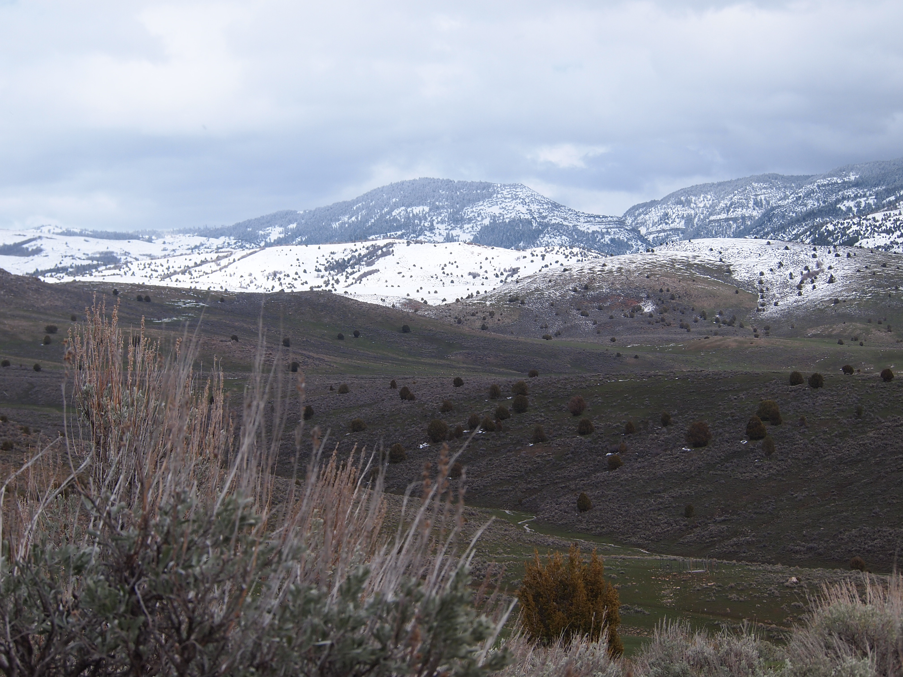

 Rock Creek, near Logan, UT.
I haven’t been fly fishing for that long; I grew up in Southern California which is not exactly a hotbed of trout fishing. I occassionally rod-and-reel fished when camping in the Sierras and in school at the University of Colorado. It was only when I moved to Utah in 2016 that I began serious fly fishing. It helps that I had a skilled mentor who taught me his style. My first summer of fly fishing, I mostly didn’t catch a thing, and I got so frustrated I kind of gave up one it.
Utah introduced it’s Cutt Slam shortly after I improved as an angler, and I was immediately intrigued by the concept. it forced me to learn more about the fish, explore waters I normally wouldn’t fish, and challenge myself by learning new techniques to tackle new waters.
While I extensively researched the places where I’d try to catch fish for my challenge, I was frustrated with the information on the internet. I found most websites to be full of fish pictures and short on details. This made things difficult for me because I was unsure how to prepare, what kinds of flies to use (though I think this is largely overrated), what kind of water I’d be fishing, in some cases where or how to access the streams. Most importantly, I wanted to have a good experience: good fishing with small crowds, nice scenery, etc. As a result, this site is short on pictures but I hope, long on details. For most of us, it isn’t feasible to drive four hours to a fishing spot and not be successful. I think a lot of the websites suggest that potential anglers have unlimited time and money to catch fish. I also don’t show fish pictures that often,and mostly focus on the water and scenery. When researching my own slams I wanted to know what the water looked like to get a sense of size, type, etc. I know what fish look like.
A summary of my completed and in progress slams can be found here. I provide details on where and how I caught my fish.
Utah Cutthroat Slam
Wyoming Cutt Slam
Nevada Native Fish Slam
California Heritage Trout Challenge
Western Native Trout Challenge
N.B.: I know it’s considered by many to be problematic to post locations of good fishing spots, but all these waters can be found on the state wildlife agency websites, on other personal websites, and in many youtube videos so I’m not giving away any secrets. Also, most of these spots (with a few exceptions) are not exactly blue ribbon, 20-inch fish, trout streams. The vast majority of waters I have fished, especially in Utah and Nevada, are small and brushy with small fish. I write about the Logan and other Cache Valley rivers in greater detail because these are my local fishing spots, but the Logan is already well-known as high quality fly fishing river. A google search for “Logan River fishing” shows that the first two results are from visitUtah.com and Utah.com. Mostly, I hope this website provides valuable information for others interested in fly fishing or pursuing trout challenges.